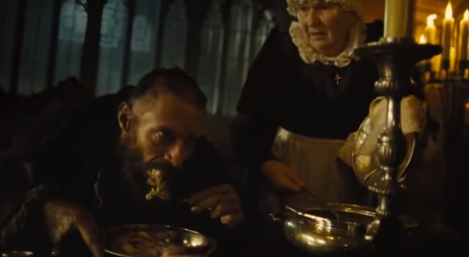
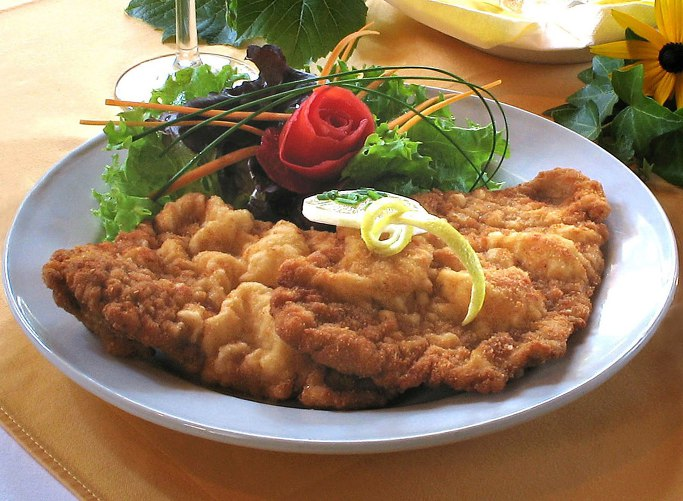
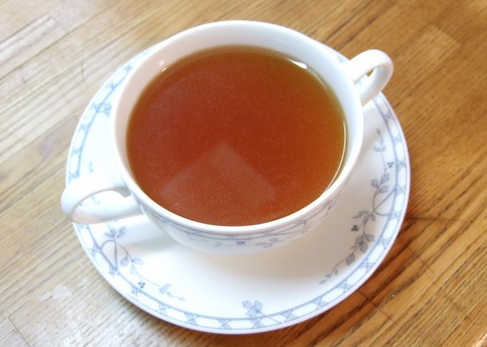
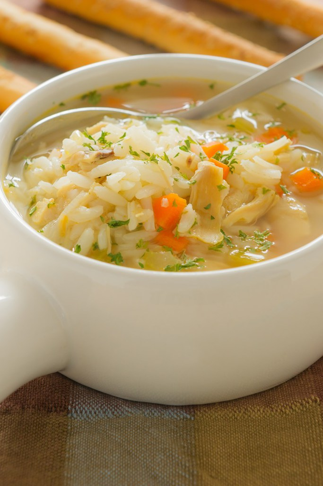
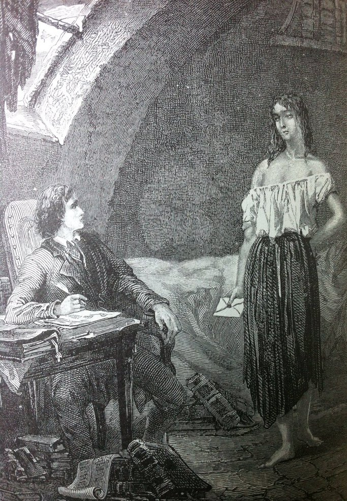
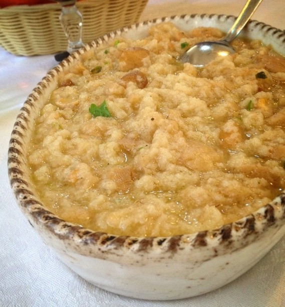
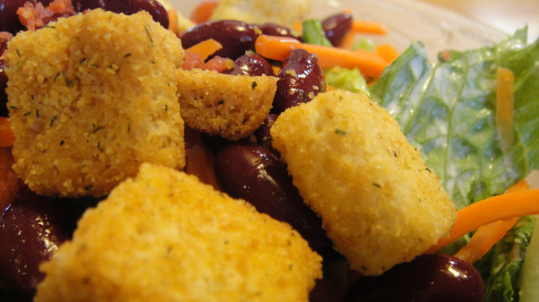

장발장이 먹은 미리엘 주교의 수프 이야기
게시: 2017-10-29T17:41:22+09:00
2012년, 휴 잭맨 주연의 레미제라블 영화 중에 장발장이 미리엘 주교를 처음 만났을 때의 장면입니다. 은접시에 퍼주는 음식을 굶주린 장발장이 허겁지겁 먹는 모습을 보면서, 저는 대체 저 음식이 무엇인지가 궁금했습니다. 화면을 보면 뭔가 고기도 좀 들어있는데 말입니다.

그 음식이 당연히 원작 소설에 나오는 내용 그대로는 아닙니다만, 어떤 음식이 나왔는지는 원작 소설에 묘사가 되긴합니다. 장발장은 미리엘 주교와 같은 식탁에서 식사를 할 때 가정부 할머니인 마글루아 부인이 내놓는 미리엘 주교의 평범한 저녁 식사 메뉴가 나열됩니다.
Cependant madame Magloire avait servi le souper. Une soupe faite avec de l'eau, de l'huile, du pain et du sel, un peu de lard, un morceau de viande de mouton, des figues, un fromage frais, et un gros pain de seigle. Elle avait d'elle-même ajouté à l'ordinaire de M. l'évêque une bouteille de vieux vin de Mauves.
그러는 동안 마글루아 부인은 저녁을 차렸다. 물에 기름, 빵과 소금을 넣고 만든 수프, 돼지비계 조금, 양고기 한조각, 무화과, 생치즈, 그리고 큰 호밀 빵 한 덩어리였다. 마글루아 부인은 주교의 그런 평상시 식사에 모브 와인 한병을 보탰다.
지금도 그렇지만 당시 프랑스에서 주교는 매우 높은 직책이고, 또 상당히 고액 연봉을 받았습니다. 그러나 미리엘 주교는 거의 대부분의 급료를 빈민구제에 써버리고, 정작 본인은 무척 소박한 음식으로 끼니를 때우기 때문에 저런 음식을 먹었던 것이지요. 저 소박한 음식 중에 특히 저의 흥미를 끌었던 것은 저 수프였습니다. 빵과 기름과 소금과 물만으로 만든 수프라니 ? 그게 무슨 괴이한 음식이란 말입니까 ?
그런데 그 빵 수프를 연상시키는 이야기가 레미제라블 속 장면보다 약 10년 전인 1809년, 나폴레옹 관련 기록에도 나옵니다. 1809년 나폴레옹이 비엔나를 점령한 뒤 그는 휘하 병사들 중 상당수를 비엔나 시내에 주둔시킵니다. 통상 이런 경우 병사들은 민간인들의 가정 주택에서 먹고 잤습니다. 그렇다고 병사들이 산적처럼 마음대로 아무 집에나 쳐들어간 것은 아니고, 병참 장교가 미리 조사한 결과에 따라 주택의 크기와 가정 형편, 그리고 그 집 가장의 사회적 신분에 따라 어떤 집은 3~4명, 어떤 집은 10여명 씩 배정되었습니다. 이 점령군 병사들이 점잖은 비엔나 중산층 시민의 가정에서 깽판을 쳤을까요 ? 그런 일이 전혀 없지는 않았겠지만, 기본적으로 그럴 일은 없었습니다. 귀족이나 부유한 중산층 시민의 저택은 숫자가 그리 많지 않았고 또 그런 집에는 장교들이 배정되었기 때문입니다. 비엔나 시민들도 대부분은 서민이었고, 그들이 자신들과 비슷한 사회적 계급 출신인 프랑스 병사들을 먹이고 재웠습니다. 기본적으로 그런 병사들과 피점령 시민들의 관계가 그렇게 나쁘지는 않았다고 합니다.

(비엔나식 돈가쓰인 슈니첼입니다. 드셔본 분들의 증언에 따르면 그냥 우리나라 돈까스가 더 맛있다고...)
문제는 비엔나 시민들이 병사들에게 뭘 먹이느냐 하는 것입니다. 부잣집에 할당된 병사들은 유명한 비엔나식 돈까스(Wiener Schnitzel)와 맥주를 대접받고 가난한 집에 할당된 병사들은 말라비틀어진 빵과 물을 먹어야 했을까요 ? 나폴레옹의 프랑스군이 현지 조달의 달인이라고 불리는데는 다 이유가 있고, 달인은 일을 그렇게 주먹구구식으로 하지 않았습니다. 프랑스 병참부는 배고픈 병사들을 떠맡은 비엔나 시민들에게 '적어도 1인당 이 정도씩을 먹여야 한다'라고 의무 배식량을 정해서 통보했습니다. 그 목록은 다음과 같습니다.
빵 1.33 파운드 그리고 추가로 수프에 넣을 빵 0.33 파운드
고기 1 파운드
쌀 0.125 파운드 (2 온스)
말린 채소 0.25 파운드 (4 온스)
여기서 눈에 확 띄는 부분이 바로 저 매일 먹을 빵 1.33 파운드 이외에 추가로 수프에 넣을 빵 0.33 파운드라는 부분입니다. 그냥 먹는 빵과 수프에 넣을 빵이 따로 있었을까요 ? 그리고 저 말린 채소라는 것은 또 무엇이었을까요 ? 게다가 비엔나에서 쌀을 요구했다고요 ? 그것도 고작 2온스, 즉 56그램 정도의 쌀로 뭘 해먹었을까요 ? 요즘 한국인들이 먹는 쌀밥 1공기를 짓기 위해 들어가는 쌀이 약 90그램인데, 한공기도 안되는 쌀인데 말입니다.
저기서 말린 채소라는 것이 사실은 말린 콩을 뜻한다는 것을 아시면 대략 견적이 나올 것 같습니다. 그냥 먹는 빵을 제외한 저 모든 재료는 결국 끓는 물 속에 들어가 뭔가 걸죽한 스튜를 만드는데 사용되었던 것입니다. 전에 올렸던 포스팅에서, 쿠아녜(Coignet)의 회고록 중 일부를 다시 보시면 좀더 분명해질 것 입니다.
-----------------------------
(목장에서 일하던 소년인 쿠아녜는 징집 명령을 받고 입대하기 위해 길을 떠납니다.)
나는 작은 꾸러미를 겨드랑이 밑에 끼고 출발하여, 첫번째 군사 주둔지인 로조이(Rozoy)에 도착하여 밤을 보내게 되었다. 나는 숙사 할당 명령서(ordre de cantonnement)를 받아다 집 주인에게 제시했는데, 집 주인은 날 본 척 만 척 하며 홀대했다. 그러고 난 뒤 난 뭔가 스튜를 만들 재료를 사러 밖에 나갔고, 푸주간에서 고기를 받았다. 내 손바닥 위에 올려진 고기 조각을 보니 몹시 처량했다. 그것을 들고와서 내 숙사로 정해진 집의 안주인에게 주며 스튜를 만들어달라고 부탁을 한 뒤, 스튜에 넣을 채소거리를 구하러 다시 밖으로 나왔다. 마침내 약간의 스튜가 만들어졌고, 그때 즈음에는 그 집 주인 식구들도 나를 어느 정도 좋게 봐주어 나에게 이런저런 말을 붙여보려고 했다. 하지만 난 그들이 전혀 마음에 들지 않았다...
-----------------------------
윗 글에서 보면, 고기는 분명히 돈을 내고 사왔는데, 양배추나 당근 등 채소류는 돈을 내고 사왔다는 것인지 밭에서 그냥 뽑아왔다는 것인지 불분명합니다. 로마 시대부터, 병사들에게 주어지는 배급 식량 목록에는 빵과 밀가루, 와인과 식초는 기록되어도 배추나 양파 등 진짜 채소는 전혀 기록이 없습니다. 이유는 그런 부식거리는 그냥 '구하는' 것이지 주요 보급품 목록에 넣을 정도로 중요 물품이 아니기 때문이었습니다. 있으면 넣고 없으면 말고 식이었지요. 또 당시 사람들은 채소를 그다지 많이 먹지도 않았다고 합니다.
전에 회사 교육 문제로 유쾌한 멕시코 친구 2명을 만나서 며칠간 잡담을 한 적이 있었는데, 그 친구들 이야기가 멕시코는 원래부터 가난한 나라여서, 어디서 친구가 방문하러 오겠다는 전화가 오면 저녁을 만들던 와이프에게 이렇게 말을 하곤 했다고 반농담반진담으로 이야기를 하더군요.
"여보, 콩 수프에 물을 더 부어야겠는걸 ?"
이렇게, 원래 수프라는 것은 적은 재료로 여럿이 배불리 먹을 수 있는 요리입니다. 게다가 솥 하나만 있으면 여럿을 위한 요리도 적은 연료로 쉽고 빨리 할 수 있었으므로 그야말로 군대를 위한 요리였지요. 그렇게 배고픈 사람들을 위한 요리가 콩소메(consommé)처럼 멀건 국물이라면 무척 실망스러웠겠지요. 그래서 가난한 사람들이나 병사들은 국물을 뻑뻑하게 만들기 위해 여러가지 부재료를 넣었습니다. 있기만 하다면 하얀 밀가루가 제일 좋았겠지만 밀가루는 빵을 만들기에도 부족한 것이었고, 쌀이 가장 좋은 재료였습니다.

(콩소메입니다. 요즘 고급 식당의 요리사들은 저런 콩소메의 국물을 맑게 하려고 계란 흰자를 쓰는 등 갖은 노력을 한다고 합니다. 정작 나폴레옹의 병사들은 질색을 했겠지요.)
쌀은 국물을 잘 흡수하여 그 자체로도 맛이 풍부한 건데기가 될 뿐만 아니라, 전분을 국물에 풀어내어 국물을 진하게 만들어줬거든요. 지금도 치킨 수프 등에는 짧은 국수를 넣기도 하지만 쌀을 넣기도 합니다. 우리나라 삼계탕이 해외에 소개될 때는 스튜가 아니라 chicken soup으로 소개되는데, 닭과 쌀이 든 국물 요리이다보니 서양의 치킨 수프와 동일시되는 것이지요. 그래서 자기들식의 간단한 chicken soup인줄 알고 삼계탕을 시켰다가 닭 한마리가 통째로 들어간 요리가 나오는 것을 보고 놀라는 외국인들도 있다고 합니다.

(Chicken soup with rice는 이런 거...)
원래 유럽에서 쌀을 가장 많이 먹는 지역이 스페인과 함께 북부 이탈리아 지역이지요. 덕분에 남부 프랑스에서도 쌀 요리를 꽤 먹었다는데, 아마 비엔나도 북부 이탈리아에서 멀지 않았으므로 쌀을 쉽게 구할 수 있었나 봅니다. 그래서 나폴레옹의 굶주린 병사들을 맞이한 비엔나 시민들에게 '쌀을 내놓으라'는 명령이 떨어졌겠지요.
하지만 쌀은 유럽 전역에서 쉽게 구할 수 있는 곡물은 아니었습니다. 쌀이 없을 때 대용으로 사용되던 것이 바로 오래되어 딱딱해진 빵이었습니다. 당시 빵은 버터나 쇼트닝이 들어가지 않은, 갓 구운 상태에서도 꽤 딱딱한 것이었습니다. 하물며 구운지 2~3주가 지나거나 잘라 먹다 껍질부분이 남은 빵조각 남은 것들은 정말 딱딱했을 겁니다. 레미제라블 후반부에, 마리우스의 하숙방에서 노닥거리던 에포닌이 방을 나가면서 마리우스의 찬장에 놓여있던 마른 빵조각을 허락도 받지 않고 냉큼 입에 넣고 씹다가 너무 딱딱해서 이빨이 부러졌다고 투정하는 장면이 나오는데, 그게 꼭 과장만은 아니었을 겁니다.

(2012년 영화 속에 나온 에포닌은 아주 건강해 보이는 얼굴이었지만, 레미제라블 원작 소설 속의 에포닌은 어린 나이에 이빨도 한두 개 빠진, 정말 헐벗고 병약한 모습으로 나옵니다. 그게 훨씬 더 현실적인 이야기지요.)
그렇게 마르고 굳은 오래된 빵을 그나마 잘 먹을 수 있는 방법이 바로 수프에 넣어먹는 것이었습니다. 그런 빵 수프 요리는 주로 이탈리아에서 발달했습니다. 리볼리타(Ribollita)라든가 아콰코타(Acquacotta) 등이 모두 빵을 넣고 끓인 수프 요리이며, 하나같이 가난한 농부들이 먹던 음식이었습니다.

(아콰코타입니다. 이탈리아식 빵 수프입니다.)
마른 빵보다 더 나쁜 것이 원양 항해나 군대에서 많이 먹던 비스킷, 즉 건빵이었습니다. 비스킷을 부수기 위해 돌로 내리치면 가끔씩 비스킷 대신 돌이 부서졌다는 그 공포의 비스킷으로도 수프를 만들어 먹었을까요 ? 예, 그렇게 많이 먹었습니다. 버구(burgoo)라는 것은 염장쇠고기와 잘게 부순 비스킷으로 만든 대표적인 영국 해군 요리(?)입니다. 그나마 부유한 함장인 잭 오브리(Jack Aubrey)를 주인공으로 한 Aubrey & Maturin 시리즈에서는 이 버구가 거의 등장하지 않습니다만, 가난뱅이 함장이 주인공인 Hornblower 시리즈에서는 수병들 뿐만 아니라 함장실에서 혼블로워가 혼자 앉아 버구를 먹고 있는 장면이 종종 나옵니다.
결국 미리엘 주교가 먹던 저 빵 수프라는 것은 결코 주교님이 드실 만한 음식은 아니었습니다. 그래서 소설 원작에서도 장발장이 '동네 짐마차꾼들이 이거보다는 더 잘 먹는다'라고 말할 정도지요. 미리엘 주교는 '그 사람들 일이 더 힘드니까요'라고 웃으며 말하는데, 장발장은 눈치도 없이 '그게 아니라 그 사람들이 돈이 더 많은 것 같은데요' 라고 팩트 폭력을 행사하지요.
이 빵 수프 이야기는 나폴레옹 이야기로 마무리하겠습니다. 1809년 7월 7일 밤, 바그람 전투를 승리로 마무리하고 지친 나폴레옹은 사령부로 마련한 농가 앞 짚단 위에 앉아 졸고 있었습니다. 그 다음 장면은 당대 어느 유럽 군대에서도 있을 수 없는 일이었습니다만, 당시 프랑스 군대에서는 종종 벌어지던 일이고, 그것이 바로 나폴레옹의 군대를 강군으로 만들었던 문화이기도 했습니다. 그 앞을 지나가던 어느 유격병(voltigeur) 상병 하나가 황제가 그렇게 지쳐 떨어진 것을 보고는 아무의 제재도 받지 않고 감히 말을 걸었습니다.
"폐하, 우리가 끓인 수프라도 좀 드시겠습니까 ?"
그러자 잠에서 깬 나폴레옹도 짜증내지도 않고 아주 자연스럽게 물었지요. "잘 익었나 ?"
이 상병은 나폴레옹을 자기와 그 동료들이 끓여놓은 수프 남비 앞으로 데려갔습니다. 거기에는 잘게 부순 마른 빵조각(crouton)까지 넣어 아주 걸죽한 수프가 은으로 된 작은 단지에서 끓고 있었습니다. 나폴레옹은 그걸 보고는 이렇게 물었습니다.
"대체 어디서 흰빵과 은단지를 구했나 ? 훔쳤나 ?"
그때 나폴레옹 표정이 어땠는지는 모르겠으나, 여기서 까딱 잘못하면 그 상병은 약탈죄로 즉결처분에 처해질 수도 있는 상황이었습니다. 그러나 상병은 아주 천연덕스럽게 이렇게 대답했다고 합니다.
"빵은 의무 마차에서 샀고, 은단지는 어느 죽은 장교의 몸에서 찾은 겁니다."
나폴레옹은 그 죽은 장교가 프랑스군이었는지 오스트리아군이었는지 묻지 않았고, 그렇게 나폴레옹과 상병 및 그 동료들은 고된 하루 끝에 든든한 저녁을 함께 즐겼다고 합니다.

(보통 시저스 샐러드에 딸려 나오는 사각형 튀긴 빵조각을 크루통이라고 하지요. 그러나 원래 croûton이라는 단어의 뜻은 긴 빵의 껍질이 많은 양쪽 끝부분 또는 굳은 빵조각을 뜻하는 것입니다.)
Source : Napoleon Conquers Austria: The 1809 Campaign for Vienna By James R. Arnold
Les cahiers du capitaine Coignet by Jean-Roch Coignet
Les Miserables by Victor Hugo
https://en.wikipedia.org/wiki/Acquacotta
https://en.wikipedia.org/wiki/Ribollita